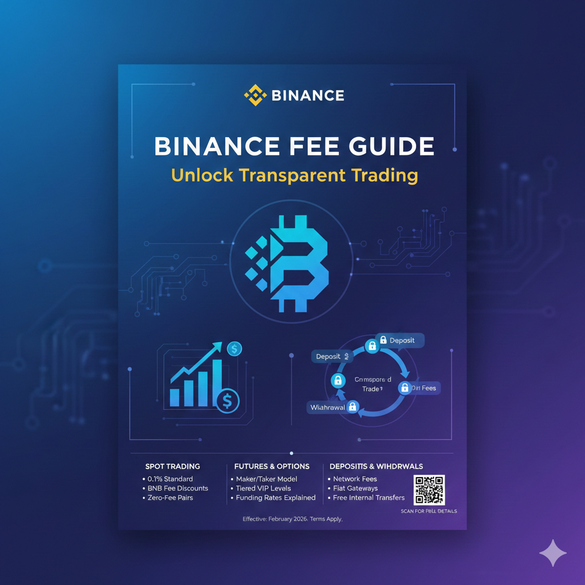

Binance Fees Explained: Spot, Futures, Options & Full Comparison With Other Exchanges (2026 Guide)
Binance is one of the world’s largest cryptocurrency exchanges by trading volume and liquidity. One of the main reasons traders choose Binance is its highly competitive fee structure for both spot and derivatives markets.
In this guide, we explain all major Binance fees — including spot trading, futures, options, deposits and withdrawals — and compare Binance with other popular platforms such as Bybit, OKX, KuCoin, Bitget, Kraken and Coinbase.
1. Binance Fee Basics
Binance uses a maker–taker fee model. A maker order adds liquidity to the order book, while a taker order removes liquidity.
Your actual fee depends on your trading volume, VIP level and whether you choose to pay fees using Binance Coin (BNB).
2. Binance Spot Trading Fees
For most users, the default Binance spot trading fee is:
- Maker fee: 0.10%
- Taker fee: 0.10%
If you enable the “Pay fees with BNB” option, Binance applies a 25% discount on spot trading fees. This reduces both maker and taker fees to approximately 0.075%.
Binance also offers a VIP tier system. Traders with higher 30-day trading volume or larger BNB balances receive progressively lower spot trading fees.
3. Binance Futures Fees
Binance futures trading is available in two main markets:
- USDT-M futures (margin and settlement in USDT or other stablecoins)
- COIN-M futures (margin and settlement in crypto such as BTC or ETH)
The standard fees for USDT-M futures are:
- Maker fee: 0.02%
- Taker fee: 0.04%
Similar fee levels apply to COIN-M futures, although exact values can vary slightly by contract.
Binance futures traders can also benefit from VIP discounts and BNB-based fee reductions.
In addition to trading fees, futures traders must consider funding fees. Funding is exchanged between long and short positions at regular intervals and can significantly affect total trading costs, especially for long-term leveraged positions.
4. Other Binance Fees
Binance Options Fees
Binance options typically charge a flat fee that is usually around 0.02% to 0.024% for both makers and takers.
Deposit Fees
Cryptocurrency deposits on Binance are generally free. Fiat deposit fees depend on your region and payment method, such as bank transfer, card payment or third-party payment providers.
Withdrawal Fees
Cryptocurrency withdrawals are charged a network fee. This fee depends on the blockchain being used and current network congestion.
For example, withdrawing Bitcoin will cost a fixed BTC amount set by Binance and adjusted periodically according to network conditions.
P2P Trading Fees
Binance P2P trading usually offers zero maker fees and very low or zero taker fees, depending on the local market and currency.
5. Binance vs Other Exchanges
The table below shows a simplified comparison of base-level trading fees on major platforms.
| Exchange | Spot Maker | Spot Taker | Futures Maker | Futures Taker |
|---|---|---|---|---|
| Binance | 0.10% | 0.10% | 0.02% | 0.04% |
| Bybit | 0.10% | 0.10% | 0.02% | 0.055% |
| OKX | ~0.08% | 0.10% | 0.02% | 0.05% |
| KuCoin | 0.10% | 0.10% | 0.02% | 0.06% |
| Bitget | 0.10% | 0.10% | 0.02% | 0.06% |
| Coinbase | ~0.40% | ~0.60% | 0.02% | 0.05% |
| Kraken | ~0.10% | ~0.20% | 0.02% | 0.05% |
Overall, Binance remains one of the most cost-efficient exchanges for both spot and futures trading, particularly for active traders who benefit from BNB and VIP discounts.
6. Advantages & Disadvantages of Binance Fees
Advantages
- Very competitive spot and futures trading fees
- Strong VIP tier program for high-volume traders
- BNB fee discounts significantly reduce costs
- No crypto deposit fees
- High liquidity reduces slippage for most pairs
Disadvantages
- Best fees require holding BNB or large trading volume
- Funding fees can increase real futures trading costs
- Withdrawal fees depend on blockchain network conditions
- Fee structure may appear complex for beginners
7. How to Reduce Your Binance Fees
- Enable the option to pay trading fees using BNB
- Use limit orders to qualify for maker fees
- Increase your 30-day trading volume to unlock VIP tiers
- Hold a larger BNB balance to improve your fee level
- Select cheaper blockchain networks when withdrawing funds
8. Final Thoughts
Binance continues to be one of the most affordable and liquid cryptocurrency exchanges for both spot and derivatives trading in 2026.
When compared with competitors such as Bybit, OKX, KuCoin, Bitget, Kraken and Coinbase, Binance generally offers lower effective fees, especially for traders who actively use BNB discounts and VIP tiers.
However, trading fees should not be the only factor when choosing an exchange. Security, regulatory coverage, asset availability, liquidity and platform stability are equally important when selecting the best platform for your trading strategy.